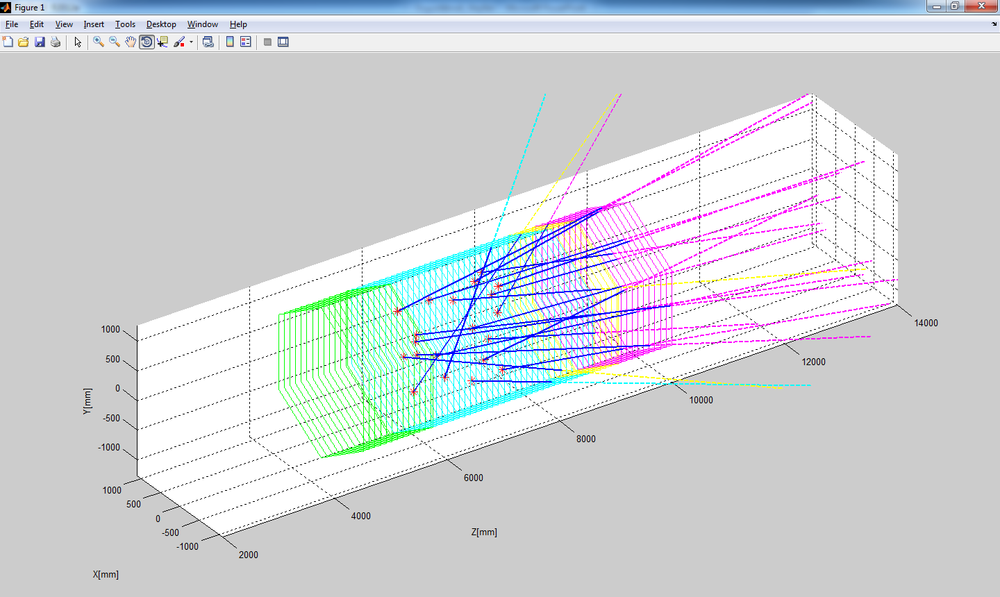
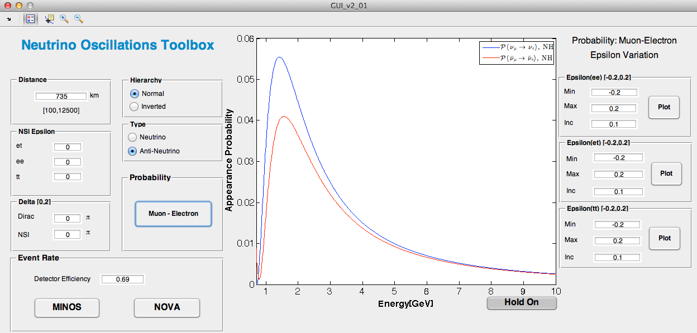

Software Development
High Statistics Data Analysis
Data Analysis Package for MINERvA

- About:
- C++ Data Analysis Package implemented for MINERvA Analysis Framework. General set of classes are used to apply selections and generate histograms for Data and Monte Carlo events for different Analysis Packages.
- Technologies:
- C++, ROOT
- Collaborators:
- None
Manual for MINERvA Analysis Framework
- About:
- Documentation for MINERvA Analysis Framework. The purpose of this document is to help new people to get involved in data analysis using MINERvA AF.
- Technologies:
- C++, ROOT, Kerberos, Grid Computing
- Collaborators:
- None
High Energy Physics Simulations
Neutrino Oscillations MATLAB Toolbox

- About:
- MATLAB functions enhanced with GUI used to simulate neutrino oscillations in matter. Simulation results may help existing and future neutrino oscillations experiments.
- Technologies:
- MATLAB, MATLAB GUIDE
- Collaborators:
- Prof. Anthony Mann (Theory)
MINERvA Detector: Particle Trajectories
- About:
- Calculates and Plots particle trajectories inside MINERvA detector. For a given interaction vertex and the particle momentum, user gets geometrical view of the particle trajectory and the exact coordinate where the particle leaves the detector.
- Technologies:
- MATLAB
- Collaborators:
- None